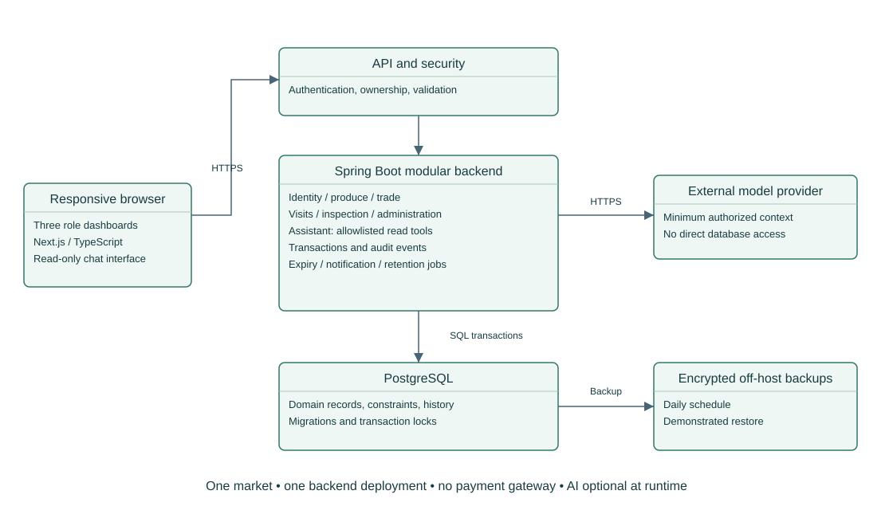
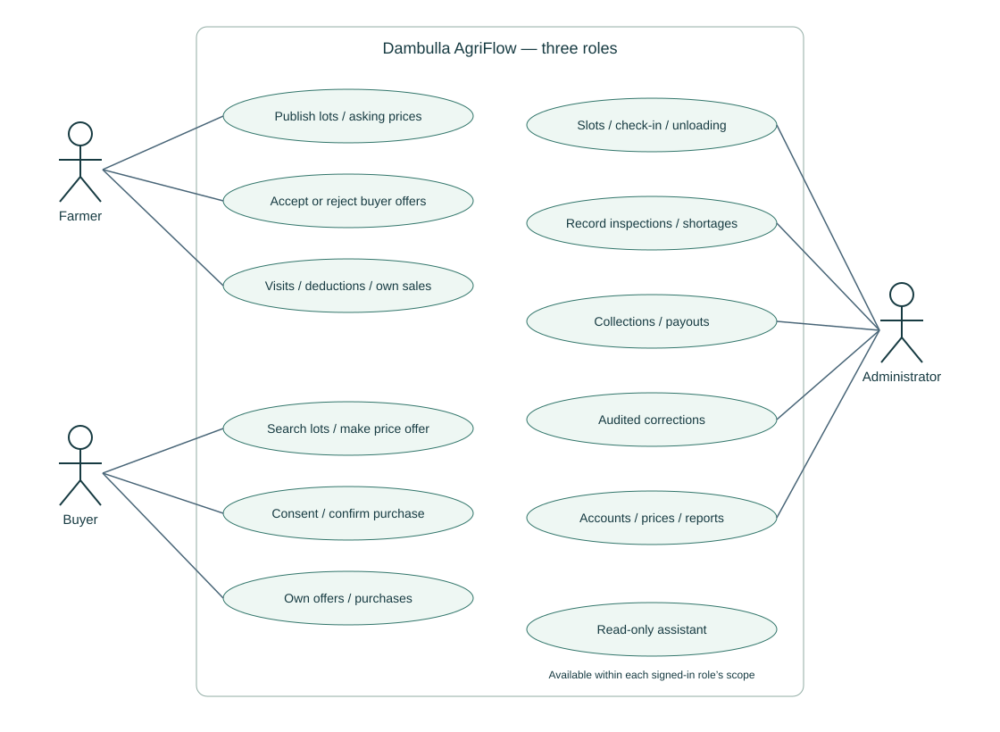
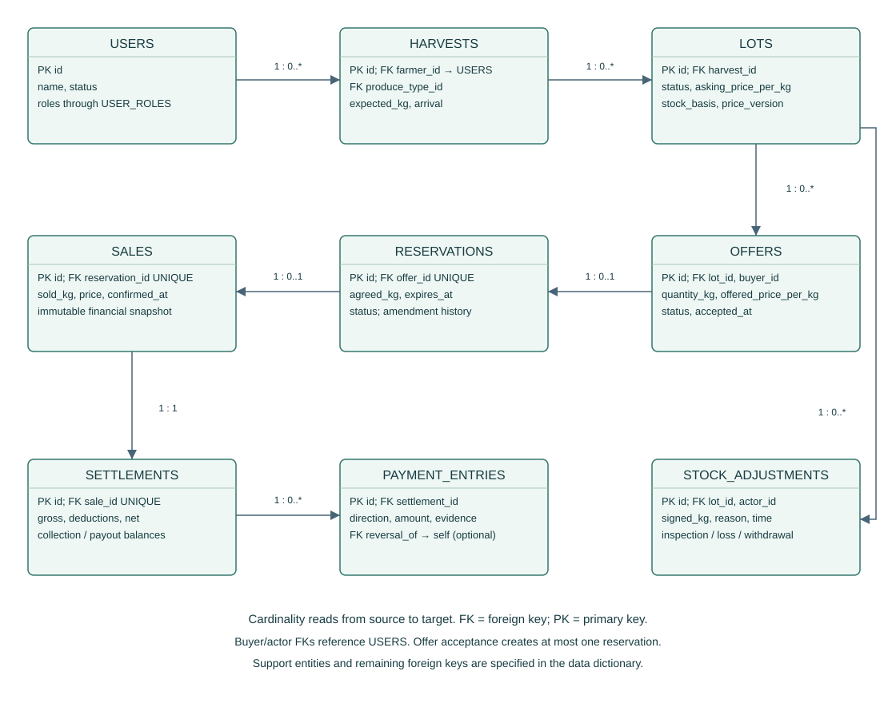
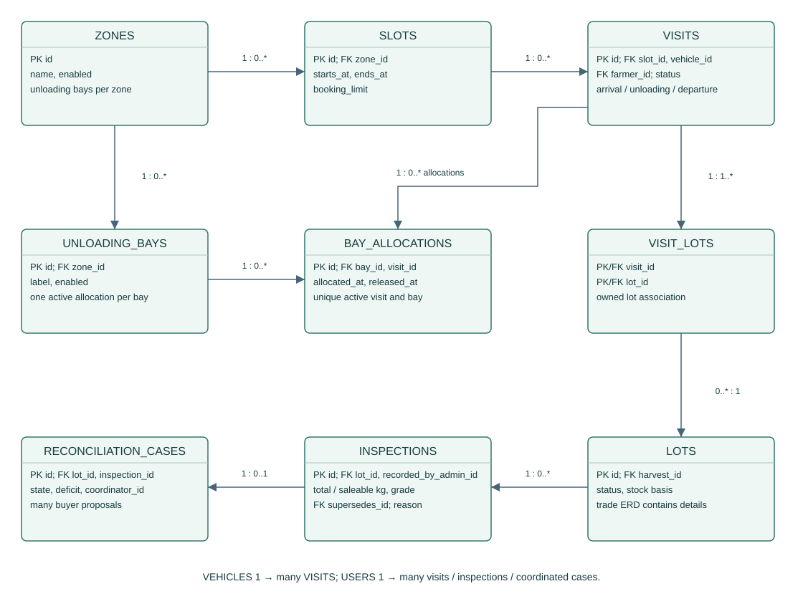
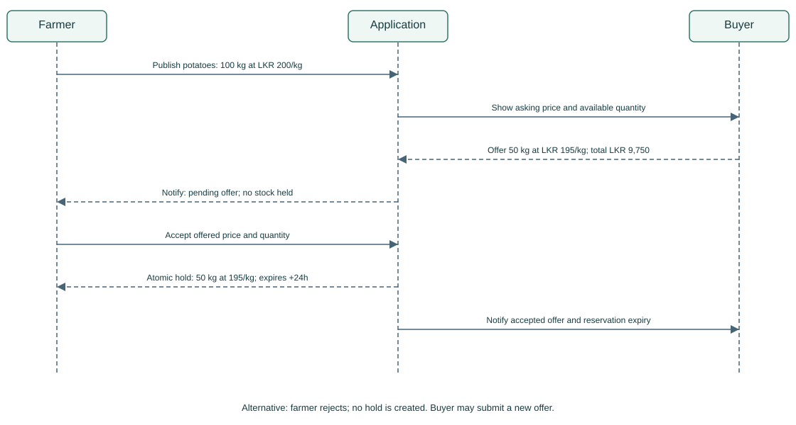
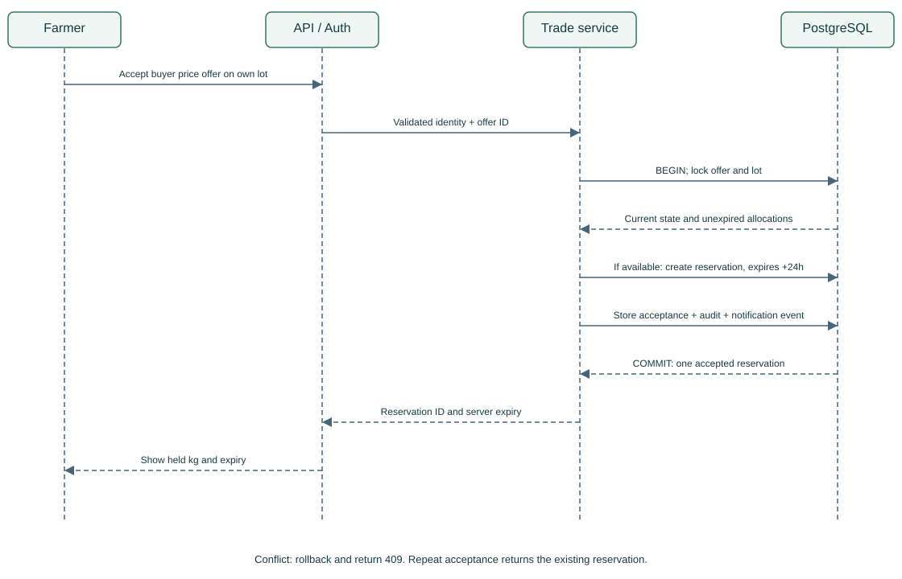
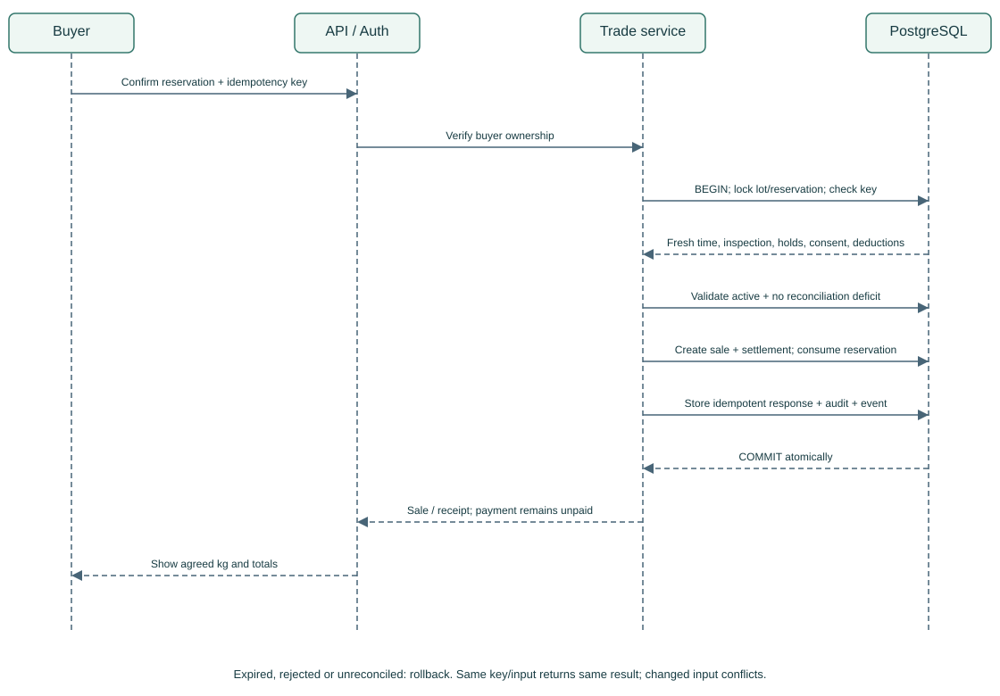
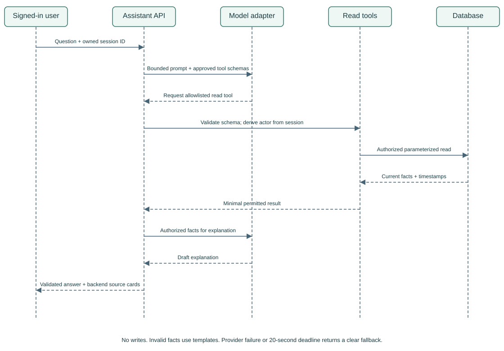
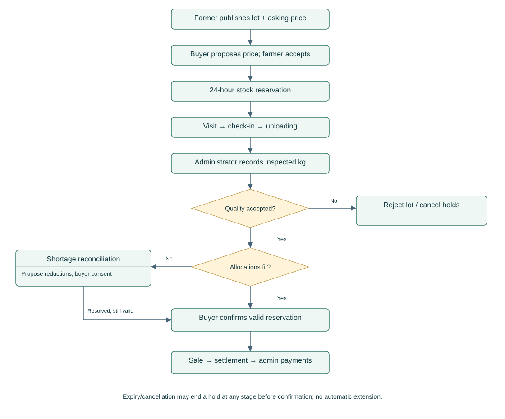
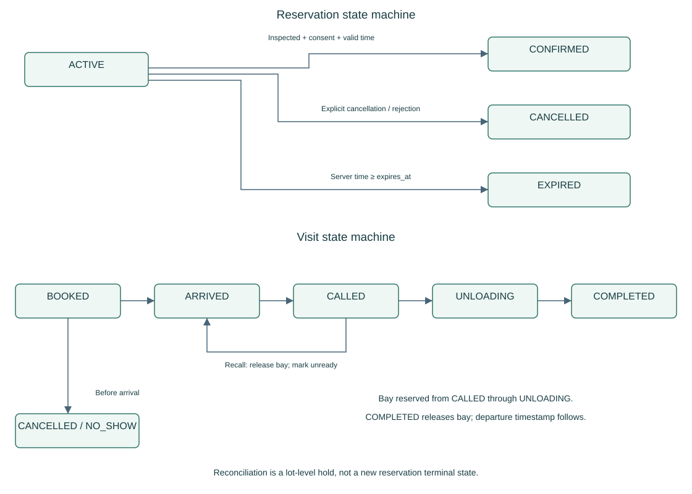

PROJECT DOCUMENTATION • VERSION 1.5
Software requirements & system design
A single-market agricultural wholesale coordination platform
Includes functional requirements, business policies, data design, role permissions, APIs, verification, delivery plan and ten editable diagrams.
Author/student details, institution and supervisor sign-off remain to be supplied. This document does not claim implementation, testing or approval has occurred.
This consolidated document incorporates the supplied v1.3 requirements and the subsequent project decisions. The MVP uses three roles: Farmer, Buyer and Administrator. Farmers publish asking prices and buyers negotiate through price offers. Twenty-four-hour reservations supersede the original two-hour rule. Administrator-managed collections and payouts are separate records; no payment gateway is included.
Status: user-requested scope update. This amendment supersedes conflicting role and pricing clauses in v1.3, the historical requirements review and v1.4 business rules. Unchanged inventory, reservation, reconciliation, payment and correction rules still apply.
The MVP has exactly three roles: FARMER, BUYER and ADMINISTRATOR. Separate operator and inspector accounts are deferred. Administrator responsibilities include gate check-in, slots, queues, unloading bays, physical inspection records, reinspection, shortage coordination, payment records and corrections, alongside account/catalog/price/report management.
The administrator records actual measured quality and weight; the application does not perform physical inspection. Every such action identifies the administrator and records time, reason and history. Farmers retain offer acceptance and deduction approval. Buyers retain shortage consent and purchase confirmation. Administrator access cannot substitute for either party's consent.
A farmer publishes 100 kg of potatoes at LKR 200/kg. A buyer offers LKR 195/kg for 50 kg, a total of LKR 9,750. If the farmer accepts, 50 kg is reserved for 24 hours at LKR 195/kg and 50 kg remains available. After satisfactory inspection and buyer confirmation, the gross sale is LKR 9,750. If the farmer rejects, no stock is reserved and the buyer can submit another offer. Updating the listing to LKR 205/kg does not change the accepted LKR 195/kg agreement.
| Test | Requirements | Expected result |
|---|---|---|
| NEG01 | FR02–03 | Publication without positive asking price fails; valid published lot is discoverable |
| NEG02 | FR04 | LKR 195/kg offer against LKR 200/kg asking price is accepted as a pending offer; no stock held |
| NEG03 | FR05/09 | Farmer acceptance reserves requested kg for 24 hours at LKR 195/kg; sale retains that price |
| NEG04 | FR05 | Rejection/cancellation creates no hold; buyer can submit a new offer |
| NEG05 | FR03–05/09 | Asking-price changes do not mutate pending or accepted offer prices or old receipts |
| NEG06 | FR04/05 | Buyers cannot view another buyer's private offer; cannot accept their own offer as farmer |
| NEG07 | FR05 | Two acceptances exceeding remaining kg cannot both commit |
| ROLE01 | FR01/06–08/10/14 | Only administrator performs operational, inspection and financial actions; all are audited |
| ROLE02 | FR01/05/09 | Administrator cannot impersonate farmer acceptance/deduction approval or buyer consent/confirmation |
Weeks 3–4 now establish three demo roles and their permission tests. Weeks 5–6 include publishable asking-priced lots; weeks 7–8 include buyer price offers and farmer decisions. Operations, inspection and financial workflows remain required but share the administrator dashboard. Keep the 22-week plan provisional rather than claiming an unmeasured schedule reduction.
The v1.5 PDF and this consolidated source are the current documentation baseline. Implementation and test outcomes remain pending.
AgriFlow coordinates a single agricultural wholesale market through a responsive web application. Farmers register produce; buyers make offers; farmers accept offers to reserve stock; administrators coordinate vehicle visits and unloading; administrators establish physical quality and weight; buyers confirm purchases; administrators record payment evidence. The software records trades and settlements but does not transfer money.
The main journey is:
Account → harvest → lot → offer → reservation → vehicle visit → inspection → sale → settlement → payment evidence
Visits can be booked without a reservation. A lot can have multiple buyers and partial sales. The model assistant reads authorized application information and approved help; it has no authority to change business records.
| Actor | Responsibilities | Boundary |
|---|---|---|
| Farmer | Publish asking-priced lots, accept/reject offers, book visits, approve deductions, view own sales | Own records; cannot inspect or record payments |
| Buyer | Search lots, propose price/kg and quantity, consent to shortages, confirm purchase | Own offers/transactions; no other buyer's private offers |
| Administrator | Operations, inspections, shortages, payments, corrections, accounts, prices, reports | Audited actions; cannot impersonate farmer or buyer consent |
The assistant is a read-only feature, not an additional role. Separate operations and inspection staff accounts are future extensions.
IDs below preserve the source numbering. These are condensed requirements, not replacements for the original detailed clauses.
| ID | Required behavior | Acceptance emphasis |
|---|---|---|
| FR01 | Accounts, sign-in, account status, roles and access control | Restricted actions denied server-side; session expiry/revocation |
| FR02 | Farmer profile and harvest registration | Ownership, produce type, positive kg, planned arrival and validation |
| FR03 | Published asking-priced lots and QR lookup | Immutable unique IDs; QR grants no private-data access; manual lookup |
| FR04 | Buyer search and negotiated price offers | Type/kg/grade/arrival filters; positive quantity and proposed price |
| FR05 | Farmer acceptance/rejection and reservations | Atomic availability check; 24-hour expiry; release once |
| FR06 | Vehicle visits and slots | Owned lots, vehicle identity, capacity safety, booking without a buyer |
| FR07 | Gate and unloading queue | Valid transitions, FIFO within eligible zone/slot, dispatch capacity, late/no-show handling |
| FR08 | Quality inspection | Actual kg, grade, damage/time, declared grade retained, rejection and correction history |
| FR09 | Buyer purchase confirmation | Valid unexpired reservation plus inspection; exactly one sale; partial lot sales |
| FR10 | Settlements, receipts and payment entries | Decimal gross/deductions/net; unpaid by default; partial payments; idempotency and reversals |
| FR11 | Reference prices | Manual/CSV entry, produce/market/unit/source/date, missing/stale indication |
| FR12 | In-app notifications | Own unread events; accepted offers, expiry, visit changes, inspection and sale; independent of trade success |
| FR13 | Administration and daily reports | Account/catalog/zone management; sold kg, gross, payments and visits reconcile with records |
| FR14 | Audit and corrections | Actor/time/entity/action/reason; completed financial records corrected through linked reversals |
| FR15 | AI system help | Approved role-visible articles with title/link and version provenance |
| FR16 | AI reference-price lookup | Stored price, source, effective date, unit and freshness; no invented values |
| FR17 | AI own queue status | Authorized visit only; clarify multiple matches; current facts |
| FR18 | AI produce search | Validated bounded filters, visible lots, declared/inspected distinction |
| FR19 | AI own reservations | Fresh owner-authorized status and expiry |
| FR20 | AI own trade summary | Participant-authorized backend totals; receipt never implies payment |
| FR21 | AI controlled tool execution | Allowlisted schemas/tools, identity derived from authentication, no writes or arbitrary execution |
| FR22 | AI failure/session control | Session ownership, history clearing, provider fallback and no fabricated data |
/api/v1, validated JSON, pagination, consistent errors and authorization. Appendix C is illustrative, not complete OpenAPI.Review IDs below are new tracking labels, not original SRS identifiers.
| Review ID | Source target | Required evidence |
|---|---|---|
| NFR-01 | Common API p95 <1 second, 25 concurrent users, 10 minutes, 10,000 seeded lots; model requests excluded | Load script, environment, endpoint mix and latency/error results |
| NFR-02 | 200 active seeded visits; committed queue changes visible within five seconds | Contention and refresh tests |
| NFR-03 | No overselling, excess slot bookings or duplicate confirmed sales; recorded inspection deficits block trading | Concurrent reservation/booking/expiry/confirmation tests |
| NFR-04 | AI p95 ≤15 seconds with five concurrent chats; fallback by 20 seconds | Latency and provider-failure results |
| NFR-05 | AI ≥36/40 correct or appropriate clarifications; no permission/write-prevention failures | Fixed evaluation set plus at least 12 adversarial/permission cases |
| NFR-06 | Daily encrypted off-host backup; restore ≤4 hours; potential data loss ≤24 hours | Backup configuration and timed restore record |
| NFR-07 | Responsive at 360 px and desktop; keyboard, labels, focus, readable errors and non-colour status cues | Journey-based accessibility/usability checks |
| NFR-08 | Credential protection, minimal personal data, owned chats, redacted logs | Permission tests and configuration review |
| NFR-09 | Connectivity required for writes; safe retry without duplication | Failed-network/repeated-submit demonstrations |
| NFR-10 | Single-host deployment with HTTPS, health checks, secrets and rollback instructions | Deployment walkthrough; no production HA claim |
The SRS also requires migrations, CI, setup documentation, user guidance and a demonstration. These are delivery requirements even though they do not all have FR IDs.
| Decision | Selected rule | Basis |
|---|---|---|
| D01 Reservation period | 24 hours from farmer acceptance | User requested at least one day; exact 24-hour duration selected for a clear MVP rule |
| D02 Inventory basis | Auditable quantity adjustments with one authoritative stock balance | User delegated design choice |
| D03 Inspection shortage | Proportional proposed reductions, explicit buyer consent, no silent quantity changes | User delegated design choice |
| D04 Payments | Administrator records buyer collections and farmer payouts separately | User assigned payment handling to administration and delegated details |
| D05 Corrections | Linked reversing records; physical stock restored only after verification | User delegated design choice |
| D06 Unloading capacity | Explicit unloading bays reserved atomically when a visit is called | User delegated design choice |
These decisions do not add a payment gateway, automated bank transfer, trader role or physical-return workflow.
expires_at = accepted_at + 24 hours, using server timestamps. Store timestamps consistently and display in Asia/Colombo time.expires_at. At or after that instant, confirmation fails with an expiry conflict.Twenty-four hours is the project default, not a claim that it covers every journey. Validate it with realistic travel, queue and inspection scenarios during user evaluation.
Use kg with three decimal places and decimal arithmetic. Trade quantities must be strictly positive.
Maintain an auditable stock ledger containing initial registered quantity, signed inspection corrections, subsequent loss/withdrawal adjustments and verified restoration adjustments. Sold quantities and reservation holds are separate allocations, not duplicate stock-ledger deductions.
stock_basis = initial_kg + sum(valid signed stock adjustments)
unallocated_kg = stock_basis − net_sold_kg − unexpired_held_kg − correction_held_kg
Correction-held kg is stock quarantined after sale reversal pending physical verification. Releasing a verified hold does not also add a positive stock adjustment, which would count the restored quantity twice. Resolving absent goods records a loss/withdrawal and releases the hold in the same transaction.
Normally unallocated_kg must be nonnegative. A genuine inspection shortage may expose an allocation deficit. Record the measured fact accurately, set RECONCILIATION_REQUIRED, display zero available for purchase and block new reservations and confirmations until the deficit is resolved. Never fabricate stock or reject a genuine measurement just to preserve the allocation invariant. Keep the raw deficit visible to authorized staff.
Inspection weight means accepted saleable weight for the entire lot before its first sale. The administrator records total measured weight, excluded/unsaleable kg, saleable kg, grade and damage percentage. Damage percentage is descriptive; it does not automatically trigger another stock deduction or monetary charge. Reject invalid measurements, including saleable weight exceeding total weight.
Example: registered 100 kg, inspected saleable 70 kg. Append a −30 kg correction; stock basis becomes 70 kg. Do not subtract the same 30 kg again as wastage. Reinspection before sales applies only the difference from the previous effective measurement. After any sale, record changes to remaining stock as explicit adjustments; do not reinterpret a measurement of remaining goods as the whole original lot weight.
Example: reservations of 60 kg and 40 kg against a lot measured at 80 saleable kg produce proposals of 48 kg and 32 kg. Both buyers must agree, cancel or expire before unresolved proposals stop blocking the lot. If both agree, 80 kg is allocated. If the second cancels and the first agrees, 48 kg remains reserved and 32 kg becomes available.
One reservation confirms its full currently agreed quantity into exactly one sale. Partial lot sales remain supported through multiple reservations. Arbitrary partial confirmation of a single reservation is outside the MVP.
The application records manual financial activity. Authorized administrators record collections, payouts and corrections after the actual external payment occurs. The application does not initiate money movement.
NOT_DUE; do not create a fictitious payment.Each entry includes settlement, direction (BUYER_COLLECTION or FARMER_PAYOUT), positive LKR amount, method (cash/bank/other), actual payment time, recording time, actor, payer/payee, reference/evidence note and idempotency key. Bank payments require an external reference; cash requires a receipt/reference number. File uploads are deferred; evidence references and notes are mandatory.
Compute each direction's status independently as unpaid, partially paid or paid from valid entries less linked reversals. Reject overcollection and overpayment; administrators cannot mark a settlement paid using a status toggle. Snapshot money to two decimal places using a documented decimal half-up rounding rule.
Keep these report values distinct: gross trade value, buyer collections, approved deductions, farmer payouts and outstanding balances. Deductions are not automatically platform revenue.
Example: 1,500 kg × LKR 45 = LKR 67,500 gross. Approved deductions of LKR 1,500 yield LKR 66,000 net. Once LKR 67,500 is collected, a LKR 30,000 farmer payout leaves LKR 36,000 payable. The buyer side is paid; the farmer side is partially paid.
ARRIVED to CALLED. Enforce at most one active visit per bay and one bay per visit at database level.CALLED and UNLOADING both occupy the bay. Moving to UNLOADING records actual unloading start without acquiring a second bay.ARRIVED, release the bay and record a reason. Set it temporarily ineligible until the administrator marks it ready, preserving its original arrival timestamp for ordering once ready. No automatic timeout releases a potentially occupied bay.Add to the ERD/data dictionary: stock adjustments, reconciliation cases/proposals, immutable reservation amendments, approved deduction snapshots, directional payment entries, payment reversals, sale correction cases, stock correction holds, unloading bays and active allocations. Store authoritative balances or derive them consistently; cached totals must not become independent sources of truth.
Add corresponding APIs, screens, permissions and audit events. Farmers see revised stock and deduction proposals; buyers see shortage consent and 24-hour expiry; administrators see separate collections/payouts and correction cases; administrators see reserved/occupied bays.
Required tests:
Public self-registration creates a farmer or buyer profile; staff roles are provisioned by an administrator. The role catalog contains FARMER, BUYER and ADMINISTRATOR only; each action checks role and ownership. An actor cannot accept their own buyer offer through another role. Administrators do not bypass inspection or buyer consent. Suspended accounts cannot sign in or perform normal mutations; authorized staff resolve their existing commitments without impersonating them. Use expiring sessions, credential hashing, revocation and a verified recovery mechanism. The exact authentication library and recovery delivery mechanism are implementation selections.
| Action | Farmer | Buyer | Administrator |
|---|---|---|---|
| Publish lot / edit asking price | Own | No | No impersonation |
| Submit price offer | No | Own | No impersonation |
| Accept/reject offer | Own lot | No | No impersonation |
| Shortage consent / purchase confirmation | No | Own | Coordinate only |
| Approve deductions | Own | View agreement | Propose / record |
| Book visit | Own | No | Rebook with reason |
| Slots / check-in / call / unload | No | No | Yes, audited |
| Inspection / reinspection / verify stock | No | No | Yes, audited |
| Payments / corrections | No | No | Yes, audited |
| Accounts / catalog / source prices | No | No | Yes |
| Reports / audit | Own history | Own history | Market-wide |
| Assistant / chat | Own scope | Own scope | Authorized scope |
These are design defaults selected to complete the documentation, not claims of validated market practice. Review them during stakeholder walkthroughs.
All endpoints are under /api/v1 and require authentication except the explicitly selected registration/login/recovery endpoints. IDs never grant authority. Use 400 validation, 401 unauthenticated, 403 forbidden, 404 absent/inaccessible where appropriate, 409 state conflict, 429 rate limit and 503 unavailable. List endpoints use bounded limit/offset. Errors contain code, message, safe details and traceId.
| Resource / operations | Authorization and transactional rule |
|---|---|
| /auth/register, /auth/login, /auth/logout, /auth/recovery | Vetted identity workflow; rate limit; staff cannot self-enrol |
| GET/PATCH /me; /admin/users and role/status actions | Own profile; privileged admin lifecycle |
| POST/GET /harvests; POST /harvests/{id}/lots | Farmer ownership; positive quantity |
| GET /lots and /lots/{id}; GET /lots/{id}/qr | Listing visibility and private field filtering |
| POST /lots/{id}/offers; POST /offers/{id}/accept or /reject or /cancel | Ownership; lock offer/lot on acceptance |
| GET /reservations; POST /reservations/{id}/cancel or /confirm | Participant view; buyer confirms; idempotency required |
| GET /slots; POST /visits; POST /visits/{id}/cancel or /rebook | Owned lots; capacity locks; rebooking administrator audit |
| POST /visits/{id}/check-in, /call, /start-unloading, /complete, /recall, /ready, /depart | Administrator; bay allocation and state checks |
| POST /lots/{id}/inspections; GET inspection history | Administrator; immutable measurements and adjustments |
| GET /reconciliations/{id}; POST proposals; POST proposal /accept or /cancel | Admin coordinates; buyer consent only |
| POST /lots/{id}/deduction-proposals; POST /deduction-proposals/{id}/approve | Admin proposes; farmer approves before confirmation |
| GET /sales/{id}/receipt; POST /settlements/{id}/payments | Participants read; administrator records directional payment |
| POST /payments/{id}/reversals; POST /sales/{id}/correction-cases | Admin only; linked evidence and idempotency |
| POST /correction-cases/{id}/verify-stock or /resolve | Administrator verifies; administrator resolves under correction policy |
| GET /market/prices; POST /admin/prices/import-preview or /import | Dated public-to-signed-in prices; admin imports |
| GET /notifications; PATCH /notifications/{id}/read | Recipient ownership |
| GET /reports/daily; GET /admin/audit | Authorized admin; consistent date filters |
| POST /assistant/chat; GET/DELETE /assistant/sessions/{id}/messages | Owned session; deletion API may clear messages; session deletion also supported |
| DELETE /assistant/sessions/{id} | Delete own retained session/history |
Final machine-readable OpenAPI schemas remain an implementation deliverable. This inventory establishes coverage, not a claim that endpoints exist.
All primary IDs are immutable UUIDs. Timestamps use timezone-aware database values. Foreign keys must not cascade-delete financial or audit history. Store status values as constrained enums/checks; expose no mass-assignment of privileged fields.
| Entity | Required fields / relationship and constraints |
|---|---|
| users, roles, user_roles | Identity/contact/status; composite user/role uniqueness; protected credential hash |
| farmer_profiles, buyer_profiles | Unique user FK; minimum role-specific profile fields |
| produce_types, grades | Produce code unique; grade belongs to produce; disable used catalog entries instead of deletion |
| harvests | Farmer and produce FKs; expected kg >0; planned arrival |
| lots | Harvest FK; asking_price_per_kg >0 on publish; price_version/published_at; opaque lookup token; state; stock basis |
| offers | Lot/buyer FKs; quantity and offered price >0; asking-price snapshot/version; status and acceptance time |
| reservations | Unique offer FK; agreed kg; accepted/expires timestamps; terminal state |
| reservation_amendments | Reservation and proposal FKs; old/new kg, buyer, consent time; immutable |
| inspections | Lot/administrator FKs; total/saleable/excluded kg; grade; damage 0..100; optional superseded inspection FK |
| stock_adjustments | Lot/actor FKs; signed kg, kind, reason; inspection/correction reference; immutable |
| reconciliation_cases | Lot/inspection FKs; coordinator, state, deficit; at most one active case per lot |
| reconciliation_proposals | Case/reservation FKs; original/proposed kg, response and time; no revival after expiry |
| deduction_proposals | Lot/reservation reference; category, amount, purpose; farmer approval/version |
| sales, settlements, settlement_deductions | Unique reservation→sale→settlement chain; frozen kg/price/gross/net; deduction snapshots |
| payment_entries | Settlement FK; direction, amount, payer/payee, method, evidence, times, actor; optional reversal FK |
| sale_correction_cases, sale_reversals | Sale FK, reason, financial resolution, status; one full reversal maximum |
| stock_correction_holds | Reversal/lot FKs; kg held, inspection verification and resolution; no automatic availability |
| vehicles | Registration identifier normalized/unique; display registration |
| zones, slots | Zone FK; starts/ends, booking limit; end > start; nonnegative capacities |
| visits, visit_lots | Farmer/vehicle/slot FKs; lifecycle timestamps; composite visit/lot key; owned-lot validation |
| unloading_bays, bay_allocations | Zone FK; bay/visit FKs; allocation/release timestamps; partial uniqueness for active allocation |
| market_prices | Produce/source/market/unit/effective date key; price or range; imported_at and revision audit |
| notifications, domain_events | Recipient/event/type deduplication; read time; retry metadata for committed events |
| audit_events | Actor, entity, action, reason, recorded time, safe change summary; append-only application permissions |
| idempotency_records | Actor/operation/key unique; request hash, outcome, response; financial keys retained with records |
| chat_sessions, chat_messages | User→session→messages; expiry and clear history; parent ownership checked |
| assistant_runs, help_articles | Redacted usage/latency/model/prompt metadata; versioned published role-visible help |
Index active reservations by lot/expiry, visits by slot/state, sales by date, and payment entries by settlement. Use deterministic lock ordering for lot/reservation/payment operations. Exact migration DDL and query plans are verified during implementation.
Farmer: dashboard, profile, harvest form, lot detail/QR, offers, visit booking/queue, shortage outcomes, deduction approval and receipts. Buyer: search/filter, lot details, offer form, reservations/expiry, shortage consent, purchase confirmation and purchase history. Administrator: slot capacity, arrivals, check-in/manual lookup, bay board, departure, lot lookup, measurement form, inspection history, correction-stock verification, accounts/catalog, source prices/import preview, reconciliation, collections/payouts, corrections, reports and audit. Shared: login, notifications and source-backed chat with clear-history control.
Every form needs labelled fields, error summary, pending/submitted state and safe retry. Show empty, unavailable, expired, conflict and denied states. Always distinguish declared vs inspected grade and buyer collection vs farmer payout status. Provide keyboard focus and non-colour status labels at 360 px and desktop widths.
Enforce server-side roles and ownership on every route and tool. Parameterize queries; validate DTOs; restrict CORS; protect cookie-authenticated writes against CSRF. Escape user/model content and disable raw HTML chat rendering. Keep secrets outside source and browser bundles. Use TLS, encrypted backups, controlled contact-data access and redacted logs. QR identifiers convey lookup identity only. Explain model-provider disclosure; clearing local chat does not delete provider logs. Evaluate with synthetic data until data-use settings and operational retention are agreed.
All tests currently have status NOT RUN: documentation is not implementation evidence. For each FR01–FR22 map its row in the requirement inventory to a named integration/E2E test, actual result and evidence path. Run ownership denial cases as well as normal paths.
| Test group | Coverage / expected result |
|---|---|
| T01 Identity | FR01–03: own registration/harvest/QR; cross-owner and disabled-account denial |
| T02 Trade | FR04–05: competing 80 kg holds on 100 kg, positive price, repeated acceptance, 24-hour boundary |
| T03 Operations | FR06–07: last slot conflict, one bay/two callers, late/no-show/rebooking, recall and restart |
| T04 Inspection | FR08: reject, 100→70 kg shortage, 60/40→48/32 consent, cancellation/expiry during reconciliation |
| T05 Finance | FR09–10/14: one sale per reservation, idempotency, approved deductions, directional payments, reversals and stock hold |
| T06 Administration | FR11–14: invalid/duplicate CSV, stale source, own notifications, signed report correction totals and audit |
| T07 Assistant | FR15–22: 40 functional questions plus at least 12 permission/adversarial cases; zero unauthorized reads/writes |
| T08 Quality | NFR-01–10: load, keyboard/mobile journeys, network retry, backup restore and graceful AI outage |
AI functional set: 8 help, 6 price, 6 queue, 6 produce, 4 reservation, 4 trade and 6 ambiguous/unavailable questions. Require ≥36 appropriate/correct outcomes from 40, with all permission/write-prevention tests passing. Record model, prompt version, latency, tokens, sources and expected fixture facts. Test provider outage, stale prices, injected instructions and changed stock.
For API load use a documented endpoint mix, seeded identities and hardware, 25 concurrent users for 10 minutes and 10,000 lots. Report p95 and error rates, with model latency separately. Declare the mix and allowable error threshold before measurement; do not present an invented benchmark.
Use local Docker Compose, versioned database migrations and CI builds/tests. Deploy a single-host demonstration environment with HTTPS, restricted database access, secrets, health endpoints and structured logs. Back up daily to encrypted off-host storage; demonstrate restore to a clean database and verify record counts and sample balances. Target ≤4-hour restoration and ≤24-hour data loss. Keep prior application images and migration compatibility notes; do not promise destructive migration rollback. Record actual commands, environment and timings when implementation exists.
The 22-week duration depends on actual weekly hours and submission date. Validate market grading rules, late-arrival policy, 24-hour travel feasibility and administrator payment responsibilities with stakeholders. Confirm assessment architecture/language expectations. Price source access/reuse, hosted-model settings/budget and transaction retention remain external decisions. No production SLA, verified congestion reduction or legal compliance is claimed.
Keep the source schedule as a provisional baseline. Improve its exit conditions rather than adding more features.
| Weeks | Focus | Exit condition |
|---|---|---|
| 1–2 | Validation, policy decisions, SRS/design foundation and backlog | Selected business rules reviewed; MVP boundary, permissions, state diagrams, ERD and core wireframes reviewed |
| 3–4 | Identity, profiles, migrations and CI | Three demo roles; role/ownership denial and account lifecycle checks |
| 5–6 | Harvests, lots, QR and buyer search | Farmer-created lot discoverable under visibility rules |
| 7–8 | Offers, reservations, expiry and inventory | Competing reservation, repeated acceptance and expiry races verified |
| 9–10 | Visits, slots, queue and unloading | Slot and bay concurrency, late/no-show/rebooking cases verified |
| 11–12 | Inspection, reconciliation, sale, settlement and payments | Full journey plus shortage/rejection/correction/partial-payment cases verified |
| 13–14 | Prices, notifications, reports and admin | Import behavior, notification ownership and financial/report reconciliation verified |
| 15–16 | Read-only assistant | Six question types with validated tools, sources, isolation and fallback |
| 17–18 | Integrated acceptance and measured quality | Core tests, security, load, accessibility and AI evaluation results recorded |
| 19–20 | Deployment and operational readiness | Repeatable deployment, restore evidence, rollback instructions and user guide |
| 21–22 | Contingency and assessment | Defects resolved, demo rehearsed and final report complete |
Start audit instrumentation, authorization and tests with each feature, not at the end. Run a minimal deployment early, then complete production-like demonstration configuration in weeks 19–20. Maintain documentation every week rather than postponing it to the delivery phase.
Weeks 11–12 carry substantial risk because inspection discrepancies, financial reversal and payment behavior are complex. Re-estimate after the decisions; use contingency if needed rather than quietly dropping required features. Optional CSV report export, richer charts and downloadable labels can be postponed. The read-only AI assistant remains required in the supplied baseline.
The existing proposed modular Spring Boot backend, Next.js frontend and PostgreSQL database can remain the planning baseline, subject to the assessment constraint already noted in the SRS. This review does not select dependency versions or verify current vendor compatibility.
Required: the three roles, complete produce-to-payment-record journey, safe reservations and capacity, inspection, dated prices, notifications, reports, audit, six read-only AI question types, deployment and restore demonstration.
Optional: CSV report export, dedicated demo mode, richer charts and downloadable lot labels. Reference-price CSV import is already part of the baseline and must not be confused with optional report export.
Deferred: trader/stall workflows, counter-offers, broadcast matching, SMS/push, mobile apps, full localization, offline writes, forecasting, payment gateways, multiple markets, microservices, message broker and Kubernetes.

Logical deployment and trust boundaries. Provider access occurs only through the backend adapter.

Administrator includes market operations and inspection recording. Farmer and buyer decisions remain their own; negotiation is by private offers, not an auction.

Core logical relationships. One lot supports multiple offers and sales; there is no single buyer_id on a lot. A confirmed sale creates one settlement atomically.

Bookings and simultaneous bay capacity are different constraints. VISIT_LOTS resolves the many-to-many lot/visit relationship. At most one active inspection-shortage case per lot.

Time progresses downward; return messages are dashed. Failure branches are stated alongside the flow.

Time progresses downward; return messages are dashed. Failure branches are stated alongside the flow.

Time progresses downward; return messages are dashed. Failure branches are stated alongside the flow.

Time progresses downward; return messages are dashed. Failure branches are stated alongside the flow.

Main path with inspection exceptions. Visit booking can also occur before or without a reservation. Payments require actual external payment evidence.

Terminal reservations are never reused. All transitions validate actor, current state and concurrency constraints.
Primary source: Dambulla_AgriFlow_Complete_Requirements_v1.3 (1).docx, draft dated 31 October 2026, supplied in the project folder.
Current editable source: docs/project-documentation-v1.5.md. This source consolidates the requirements and subsequent role, reservation and negotiation decisions. User decisions: at least a day for reservations; administration handles payment records; remaining principal policies delegated for selection.
Version 1.5 consolidates those requirements, selects the 24-hour rule, defines inspection shortages, separates collection/payout, specifies correction holds and atomic bay allocation, and adds diagrams and implementation coverage. Additional MVP defaults are explicitly identified as design choices requiring walkthrough validation.
External references listed in the original SRS are not treated as verified integration contracts. Current library versions, model pricing and price-data access are intentionally not asserted here.
Completed: requirements/design document and editable SVG diagrams. Pending implementation: source code, migrations, machine-readable OpenAPI, detailed wireframe assets, observed test results, operational commands, deployment and measured backup restoration. Pending stakeholder review: grading thresholds, operational defaults, real payment process, retention, deadline and assessment constraints.
Edit the Markdown inputs and docs/tools/build_documentation.py, run the generator, then export the generated HTML to PDF. SVG diagrams are editable vector files. Keep requirement IDs stable and update diagrams, acceptance conditions and timeline when business rules change.